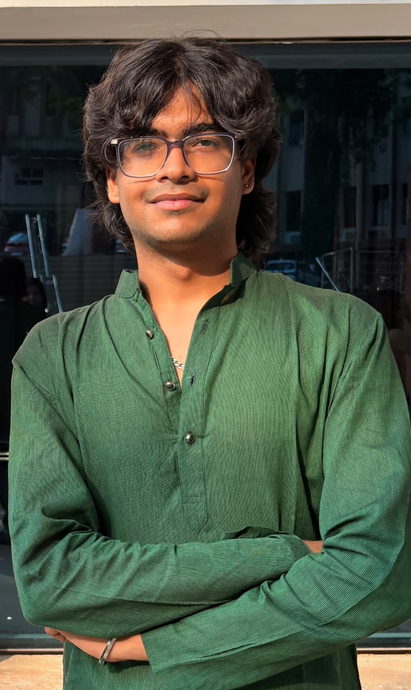

C Programming
Building a strong foundation in programming logic and problem-solving.
Hello, I’m
Third-year student • Creative thinker • Team player
I am a student at Manipal Institute of Technology who enjoys creative problem-solving, taking initiative, and working with others to turn ideas into results.

01 — About
I enjoy tasks that allow me to think creatively and find practical ways to solve problems.
I like taking responsibility for new tasks and contributing actively in a team. Working with different people helps me learn new perspectives, improve my communication, and achieve better results together. I am always interested in developing my technical knowledge and applying it to meaningful work.
02 — Education
Current Education
Third Year • Semester 5
Undergraduate studentPrevious Education
Completed secondary education before beginning undergraduate studies.
03 — Skills
Building a strong foundation in programming logic and problem-solving.
Learning object-oriented programming and structured application development.
Using clear and readable code to solve computational problems.
Understanding database design, organization, and data management concepts.
04 — Interests
I enjoy the energy, discipline, and teamwork involved in the game.
Music helps me relax, stay focused, and find fresh inspiration.
Let’s connect
I’m always open to conversations, collaborative tasks, and new opportunities to learn.
aryachoudhary.ac65@gmail.com